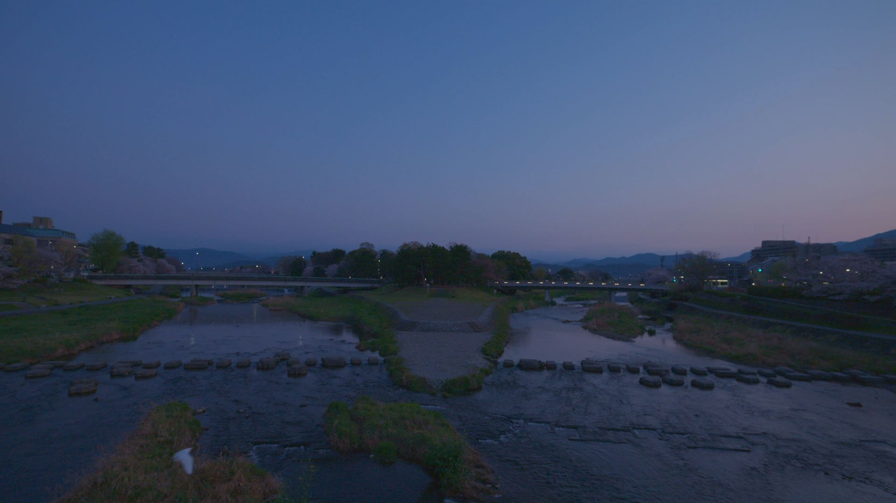
京都市左京区田中上柳町Tanaka Kamiyanagi-cho, Sakyo-ku, Kyoto
先着申込受付中NOW ACCEPTING APPLICATIONS
一01 — CONCEPT
A residence between river and forest
川と杜のあわいに住まう
古都の静けさを纏い、
水の流れに耳を澄ます。Wrapped in the quiet of the old capital,
listening to the flow of water.
糺の森が守り伝える悠久の時の流れと、瀬見の小川の清らかなせせらぎ。
日本の美意識が凝縮されたこの地に、引き算の哲学が息づく邸宅が誕生する。
洗練と静謐が重なり合うところに、真の豊かさはある。
京都市左京区、田中上柳町。高野川のほとり、鴨川デルタと糺の森にほど近い一角に、三層の邸宅が誕生します。観光の賑わいから一歩離れた、京都の日常の静けさ。そこには、住まう人だけの時間が流れています。
Where the ageless forest of Tadasu no Mori keeps time and the clear Semi no Ogawa stream murmurs, a residence shaped by the art of subtraction comes into being. True richness lives where refinement and stillness meet.
Tanaka Kamiyanagi-cho, Sakyo-ku, Kyoto. On the banks of the Takano River, close to the Kamo River Delta and the forest of Tadasu no Mori, a three-storey residence takes shape. One step away from the bustle of sightseeing lies the everyday quiet of Kyoto — and a time that belongs only to those who live here.
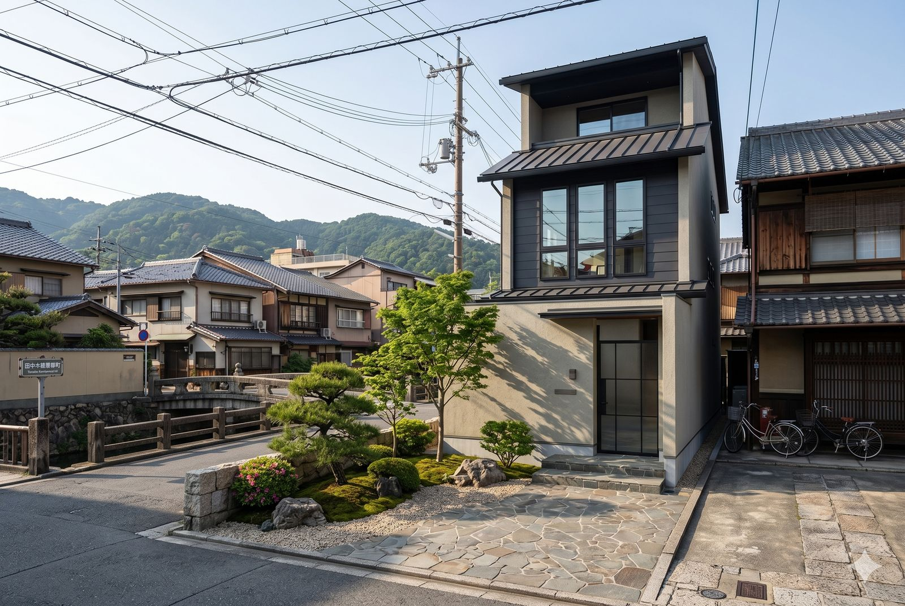

- LOCATION
- 京都市左京区Sakyo-ku, Kyoto
- FLOORS
- 地上3階Three storeys
- STATUS
- 先着申込受付中Accepting applications
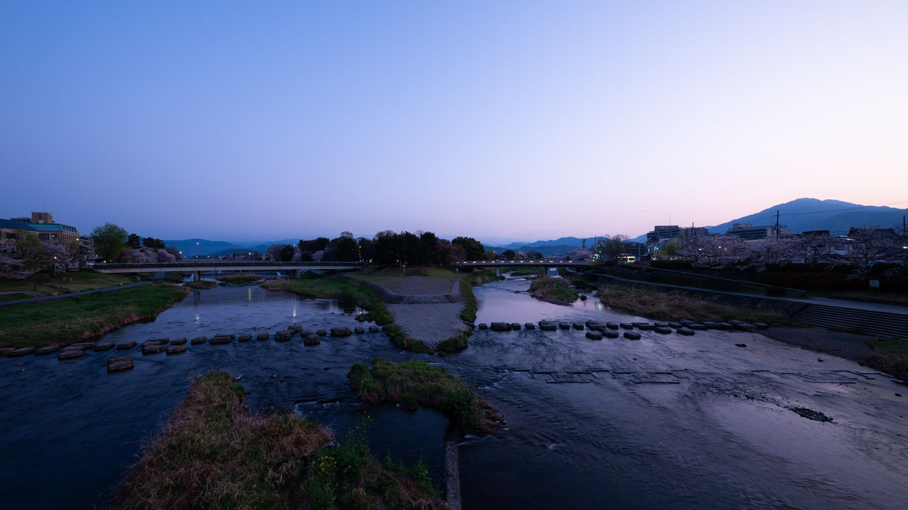
二02 — LOCATION
Where two rivers meet
ふたつの川が出会う場所
賀茂川と高野川が出会い、鴨川となる鴨川デルタ。川を渡れば、世界遺産・下鴨神社と、その境内に広がる糺の森。千年を超えて守られてきた杜と水の風景が、毎日の散歩道になります。
Here the Kamo and Takano rivers meet to become the Kamogawa — the Kamo River Delta. Across the water stand Shimogamo Shrine, a UNESCO World Heritage Site, and Tadasu no Mori, the ancient forest within its grounds. A landscape of forest and water, cherished for more than a thousand years, becomes your daily walk.

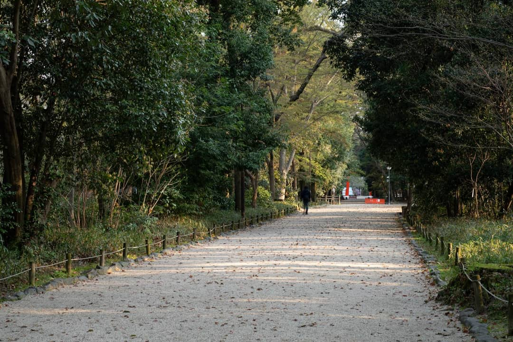


三03 — SCENES
Scenes of Kyoto
京の風景
川辺の桜、朱の楼門、町家の軒。季節ごとに表情を変える、京都の風景。
Temple gates and quiet canals, lantern-lit blossoms and stone-paved alleys — the scenery of Kyoto, changing with every season.
-
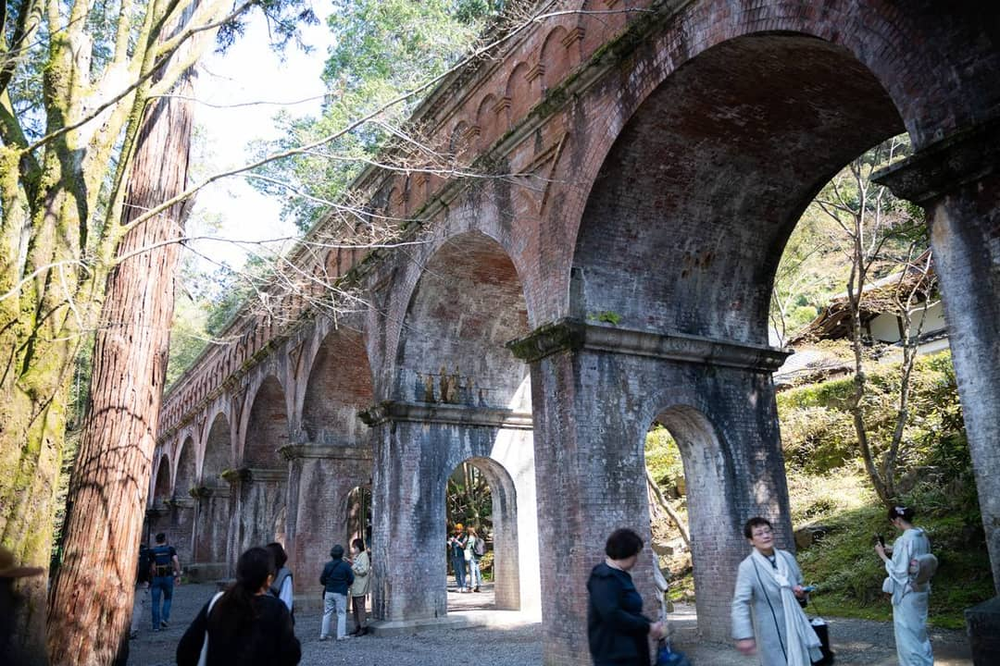
01南禅寺 水路閣Suirokaku Aqueduct, Nanzen-ji
-
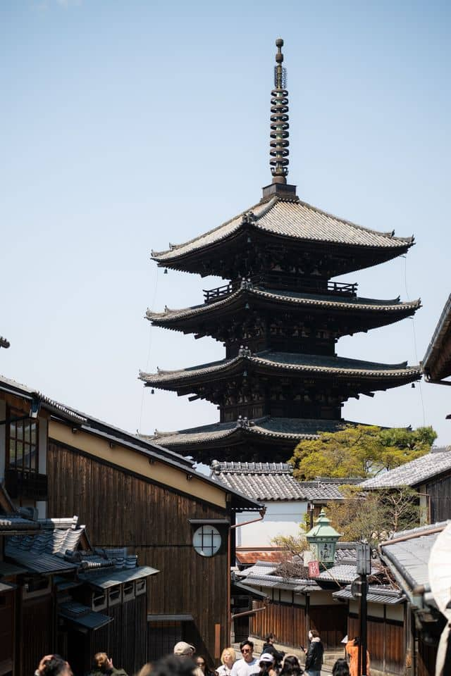
02八坂の塔Yasaka Pagoda, Higashiyama
-
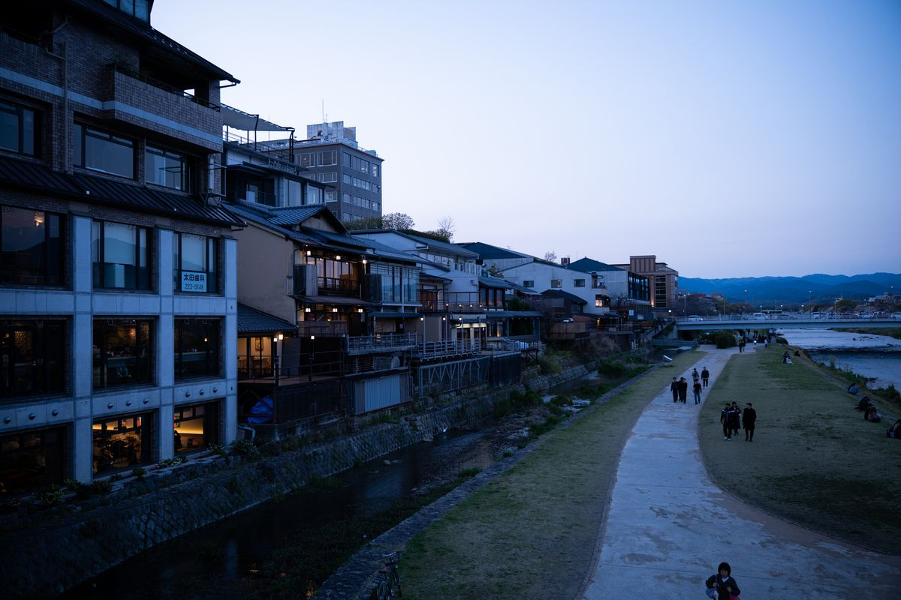
03夕暮れの鴨川The Kamogawa at dusk
-

04石畳の路地A stone-paved alley
-
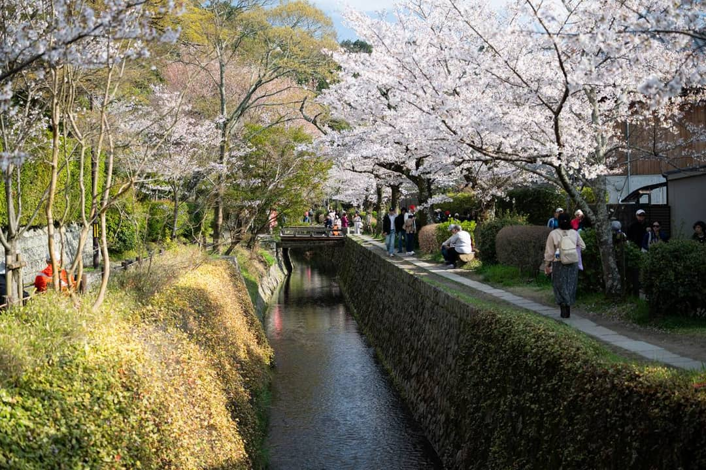
05疏水沿いの桜Cherry blossoms along the canal
-
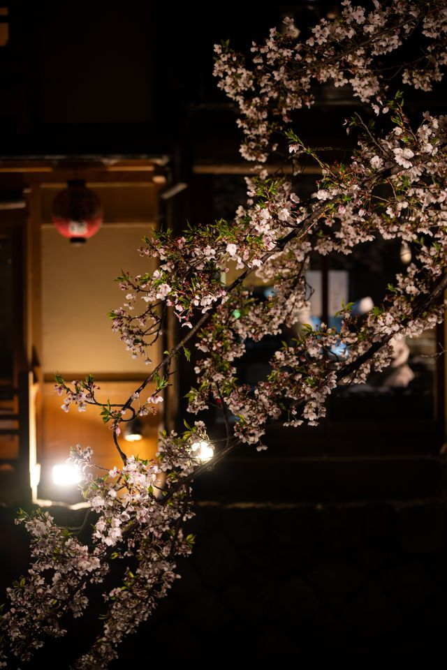
06夜桜と提灯Night blossoms and lanterns
-

07川辺のアオサギA grey heron by the river
-

08川沿いの桜並木Cherry trees along the river
四04 — RESIDENCE
Three storeys, one spiral of light
三層をつなぐ光の螺旋

現在の2階 LDKThe living floor today


土間のある一階、大きな窓から光を招く二階のリビング、天窓から光が落ちる三階。三つの階を、一本の螺旋階段がやわらかくつなぎます。
An earthen-floored entrance at ground level, a living room drawing in light through tall windows on the middle level, a skylit landing at the top — all gently joined by a single spiral stair.

この家の和のかたちJapanese elements of this home

2026.11 施工中Nov 2026, under construction
一
土間
doma
Earthen-floored entry
靴のまま過ごせる、昔ながらの土間。通りと住まいのあいだに置かれた「間」。床は、小石を洗い出した仕上げです。
A traditional entry at ground level, where shoes stay on — a pause between the street and the home. The floor is finished in arai-dashi, with small stones exposed in the surface.

畳を敷く前（2026年11月撮影）Before the tatami is laid (November 2026)
二
畳の間と床の間
tatami no ma & tokonoma
Tatami room with alcove
畳を敷いた和の室に、掛け軸や花を飾る「床の間」と押入れ。客間にも、書斎にも。※納戸扱いの室です。
A tatami room with a tokonoma — an alcove for a hanging scroll or flowers — and a futon closet. For guests, study or quiet hours. *Classified as a storage room (nando).

2026.11 施工中Nov 2026, under construction
三
螺旋階段
rasen kaidan
Spiral stair
一本の螺旋階段が、三つの階をやわらかくつなぎます。
A single spiral stair gently links all three floors.

2026.11 施工中Nov 2026, under construction
四
天窓
tenmado
Skylight
三階には、天窓から光が落ちます。
On the top floor, light falls from a skylight.
五05 — FLOOR PLANS
Floor plans
三つの階の間取り
「間（ま）」は、日本の建築で大切にされてきた、もの と もの のあいだの余白。三つの階の構成をご覧ください。
Ma (間) — the space between things — is a key idea in Japanese architecture. Here is how the three floors are arranged.
-

クローゼットWalk-in closet- 主寝室Master bedroom13.55㎡13.55㎡ (145.9 sq ft)
- 寝室Bedroom9.72㎡9.72㎡ (104.6 sq ft)
- ウォークインクローゼットWalk-in closet
- バルコニーBalcony
- 天窓Skylight
-

- リビング・ダイニング・キッチンLiving, dining & kitchen39.83㎡39.83㎡ (428.7 sq ft)
- パントリーPantry
-

- 玄関・土間Entrance & doma (earthen floor)
- 畳の間（納戸）Tatami room (storage room)13.30㎡13.30㎡ (143.2 sq ft)
- 床の間Tokonoma (alcove)
- 押入れFuton closet
- 浴室Bath
- 洗面Powder room
延床面積Total floor area129.82㎡129.82㎡ (1,397.4 sq ft)
※間取り図・面積は販売用図面によるものです。計画段階のため変更になる場合があります。※畳の間は「納戸」として扱う室です。* Plans and areas are taken from the sales drawings and may change. * The tatami room is classified as a storage room (nando). 1㎡ ≈ 10.76 sq ft.

VIEW
The view from the top floor
眼下に高野川の流れと、川沿いの緑。その先へと、空が広がります。
Below, the Takano River and the green along its banks; beyond, an open sky.
三階バルコニーより高野川・旧三井家下鴨別邸方面を望む（2026年7月撮影・建築中）View toward the Takano River and the former Mitsui Family Shimogamo Villa from the third-floor balcony (photographed July 2026, under construction)
六06 — CRAFT & PROGRESS
Built by hand, frame by frame
木を組み、家を建てる
2026年夏、木の骨組みが三層の高さまで組み上がりました。架構の中心には、三つの階をつなぐ螺旋階段。図面の線が、少しずつ住まいのかたちになっていきます。
2026年11月、外観が姿を現し、内装の仕上げが進んでいます。
In the summer of 2026, the timber frame rose to its full three storeys. At its heart, a spiral stair links every level. Line by line, the drawings are becoming a home.
By November 2026 the exterior stood complete in form, and the interior finishing was under way.
上棟jōtō
骨組みが屋根の頂まで組み上がる節目。日本では古くから、家づくりの大切な区切りとされてきました。
The day the frame reaches the ridge of the roof — traditionally one of the most important milestones in building a Japanese home.
-
2026.07
上棟Framing
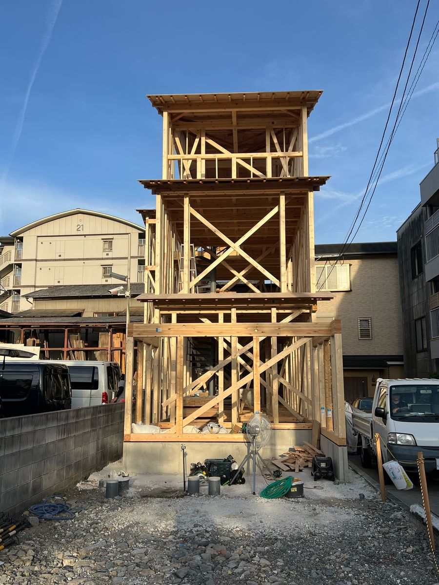
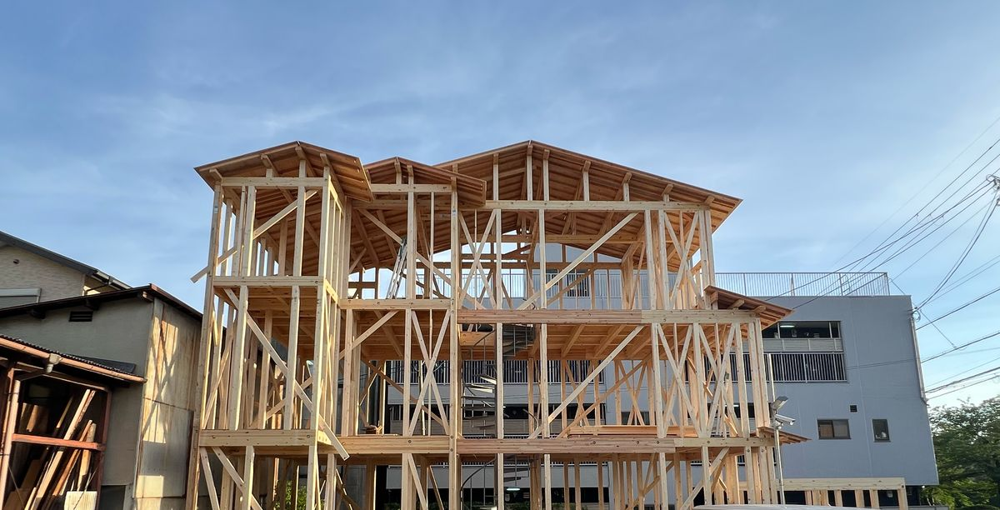
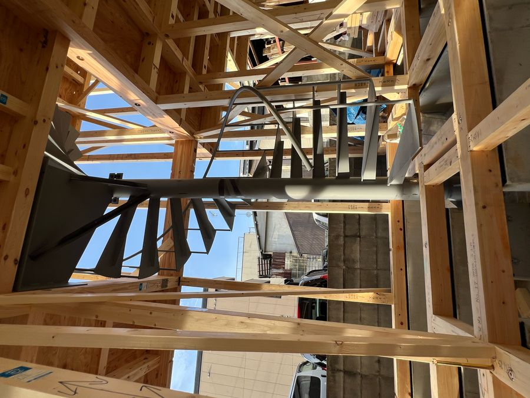

上棟時の様子（2026年7月撮影）The frame at completion of the roof structure (photographed July 2026)
-
2026.11
外観Exterior

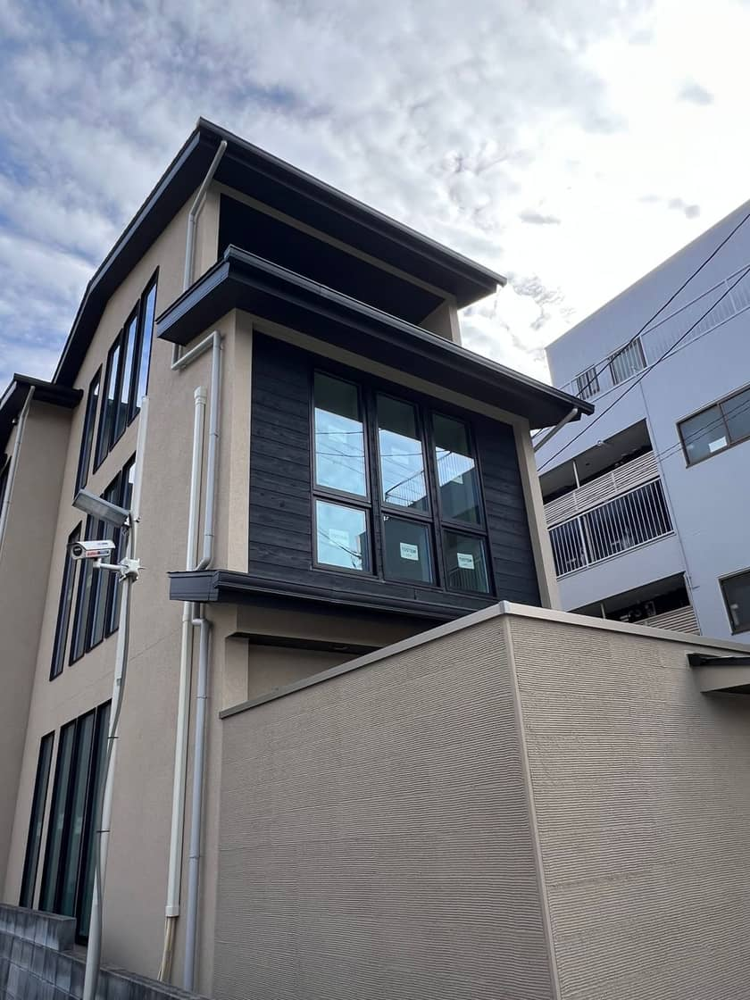
外観（2026年11月撮影・施工中）Exterior (photographed November 2026, under construction)
-
2026.11
内装Interior

1階 土間と螺旋階段（2026年11月撮影・施工中）Doma and spiral stair, 1F (photographed November 2026, under construction) 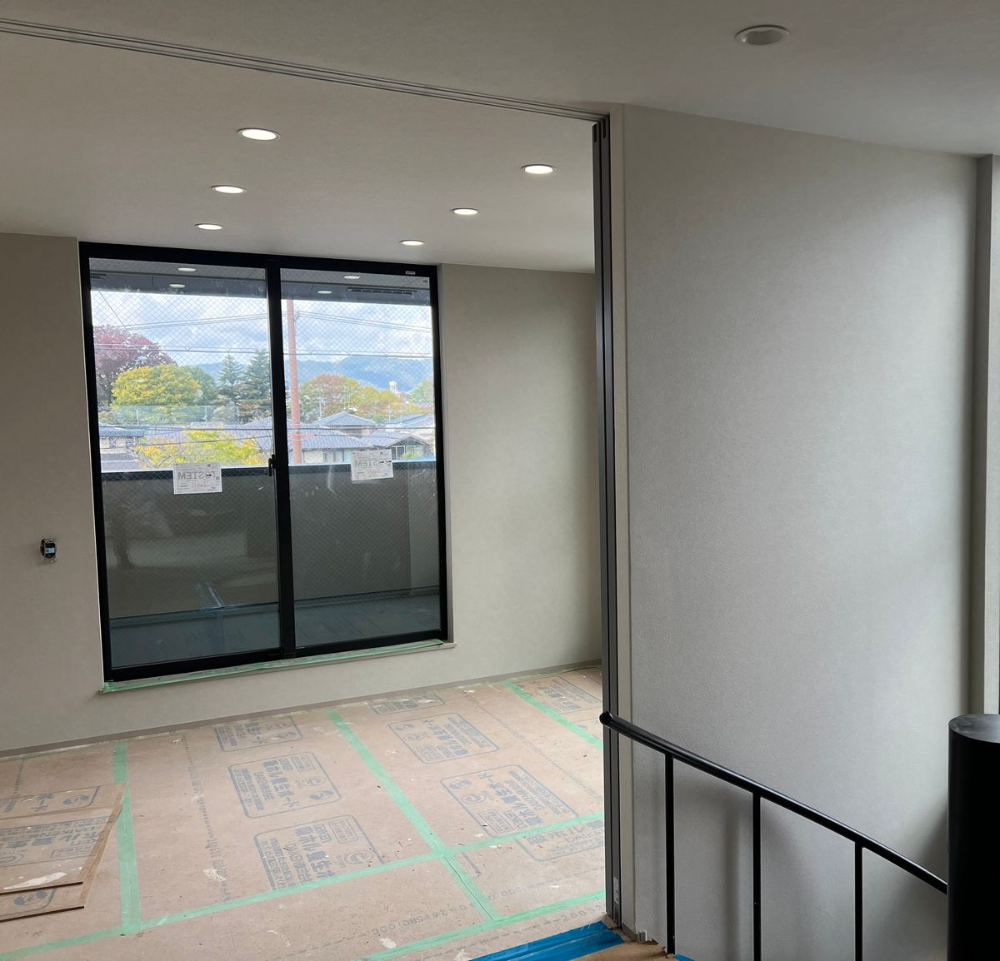
3階 洋室（2026年11月撮影・施工中）Bedroom, 3F (photographed November 2026, under construction) 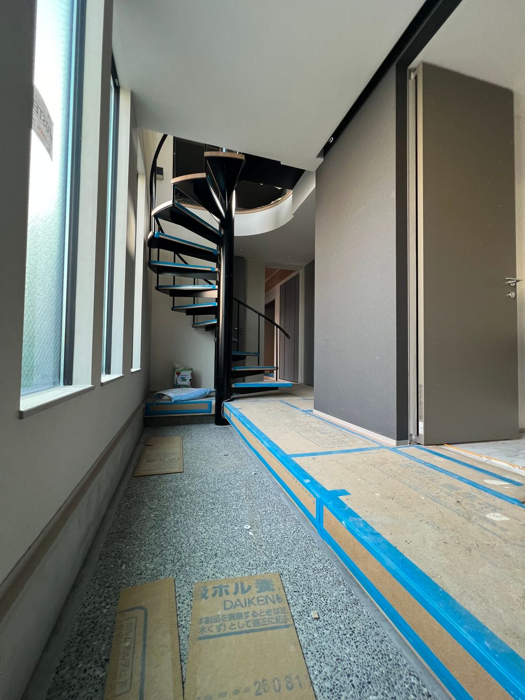
1階 土間の通路（2026年11月撮影・施工中）Doma passage, 1F (photographed November 2026, under construction)
七07 — WORDS
Words of this place
この土地のことば
一
糺の森
Tadasu no Mori
the Forest of Tadasu
下鴨神社の境内に広がる原生林。古代の山城の植生を今に伝えるといわれます。
The primeval forest within the grounds of Shimogamo Shrine, said to preserve the vegetation of ancient Kyoto.
二
瀬見の小川
Semi no Ogawa
the Semi Stream
糺の森を流れる清らかな小川。古くから和歌に詠まれてきました。
A clear stream that runs through Tadasu no Mori, celebrated in classical Japanese poetry.
-
三
鴨川デルタ
Kamogawa Deruta
the Kamo River Delta
賀茂川と高野川の合流点。亀や千鳥のかたちをした飛び石で渡ることができます。
The confluence of the Kamo and Takano rivers, crossed by stepping stones shaped like turtles and plovers.
四
葵祭
Aoi Matsuri
the Hollyhock Festival
毎年5月15日、下鴨神社と上賀茂神社で行われる祭。京都三大祭のひとつ。
Held every May 15 at Shimogamo and Kamigamo shrines; one of Kyoto's three great festivals.
五
五山送り火
Gozan no Okuribi
the Five Mountains Send-off Fires
8月16日の夜、京都を囲む五つの山に「大」の字などの火が灯ります。
On the night of August 16, fires in the shape of characters such as “大” light five mountains around Kyoto.
六
結界
Kekkai
a threshold
内と外をゆるやかに隔てる境界。通りから住まいへと気持ちを切り替える「間」の考え方。
A quiet threshold between outside and inside — the idea of a pause between the street and the home.
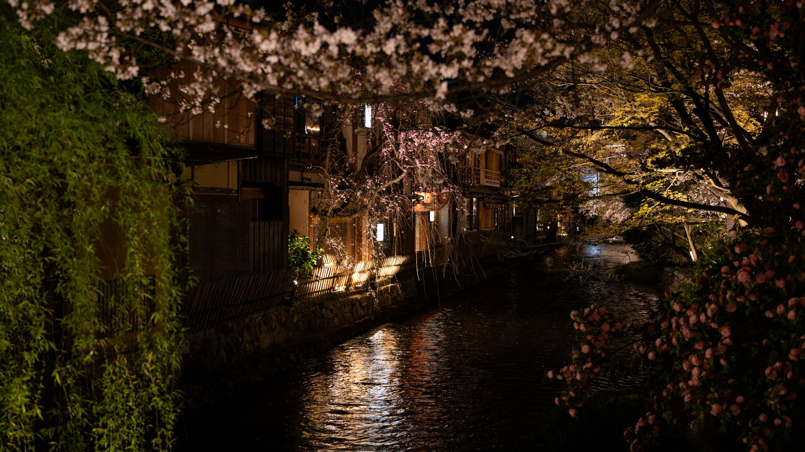
夜、川面に灯りが揺れる。At night, lights shimmer on the river.
八08 — ACCESS
Location & access
所在地と交通
※概略図です。位置・縮尺は正確ではありません。* Schematic map, not to scale.
京都市左京区田中上柳町Tanaka Kamiyanagi-cho, Sakyo-ku, Kyoto, Japan
- 最寄駅Nearest station
- 京阪本線・叡山電鉄「出町柳」駅Demachiyanagi Station (Keihan Main Line / Eizan Electric Railway)
- 大阪方面To Osaka
- 京阪特急で大阪・淀屋橋まで乗り換えなしDirect Keihan limited express to Yodoyabashi — no transfers
- 洛北方面Northern Kyoto
- 叡山電鉄で八瀬・比叡山、鞍馬・貴船へEizan Railway to Yase, Mt. Hiei, Kurama and Kibune
- 周辺Nearby
- 下鴨神社・糺の森／鴨川デルタ／旧三井家下鴨別邸Shimogamo Shrine & Tadasu no Mori / Kamo River Delta / Former Mitsui Family Shimogamo Villa
- 所在地Location
- 京都市左京区田中上柳町Tanaka Kamiyanagi-cho, Sakyo-ku, Kyoto
- 階数Floors
- 地上3階Three storeys above ground
- 販売状況Status
- 先着申込受付中Accepting applications (first come, first served)
販売価格・面積等の詳細は、内覧時にご案内いたします。Price and full details will be provided at your private viewing.
九09 — CONTACT
Private viewing
内覧のご案内
先着申込受付中・内覧ご予約承り中。
内覧・ご購入のご相談は、下記よりお問い合わせください。
We are now accepting applications on a first-come, first-served basis. To arrange a private viewing or discuss a purchase, please contact us below.
プリンシパルホームでは、新築・リノベーションのご相談も承っております。Principal Home also welcomes enquiries about new builds and renovations.